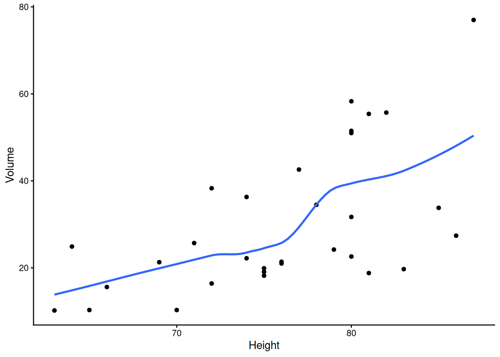
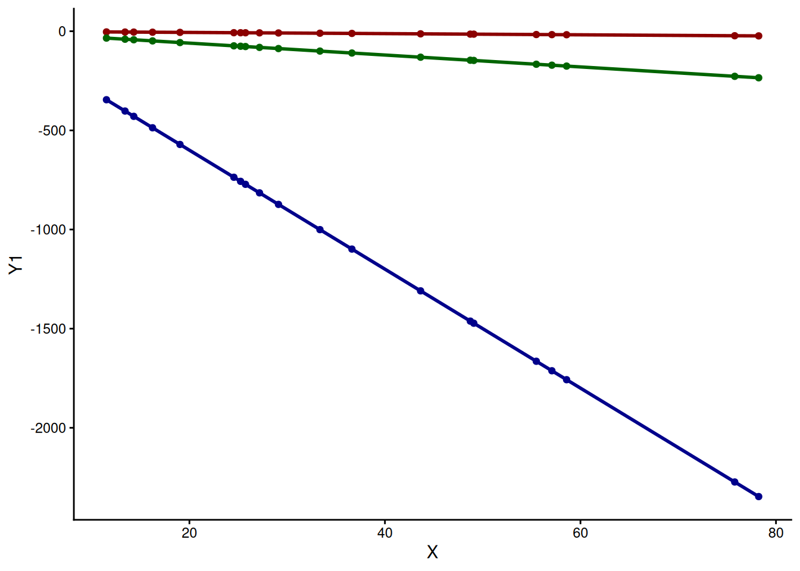
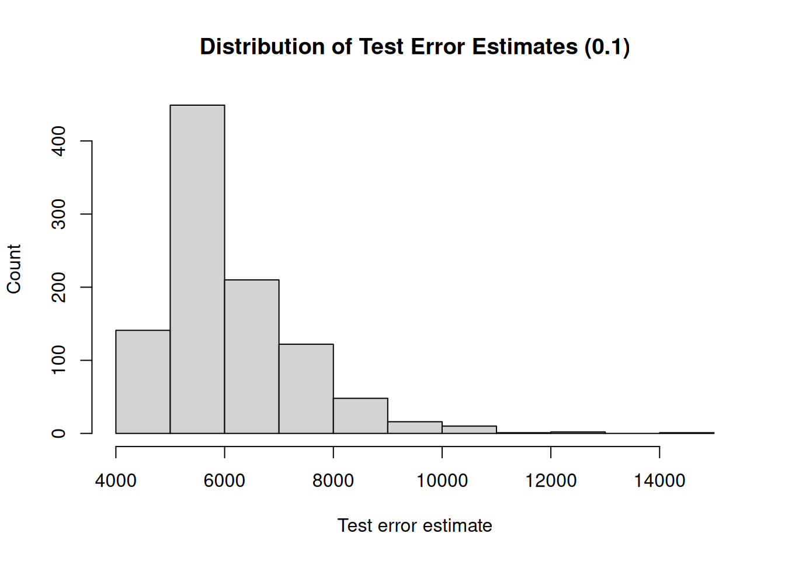
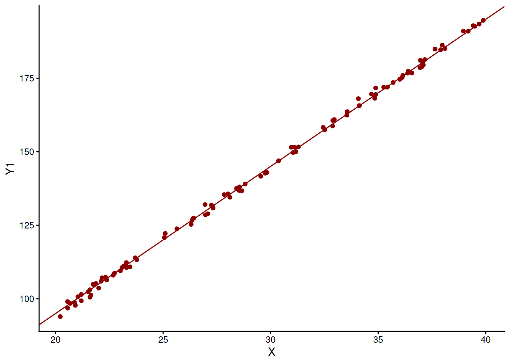
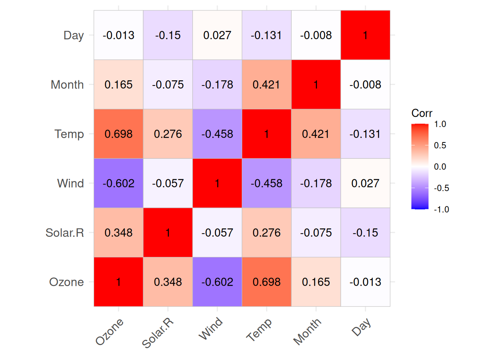
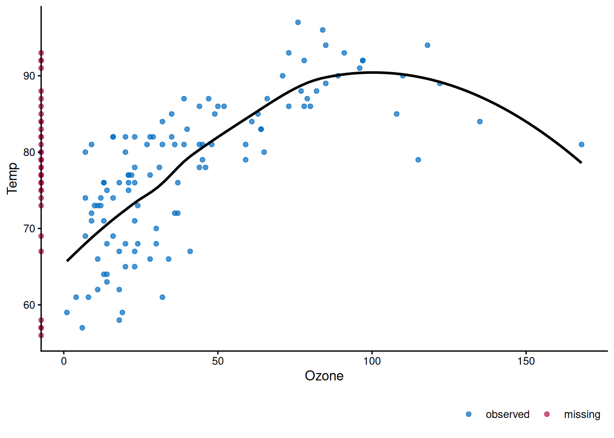
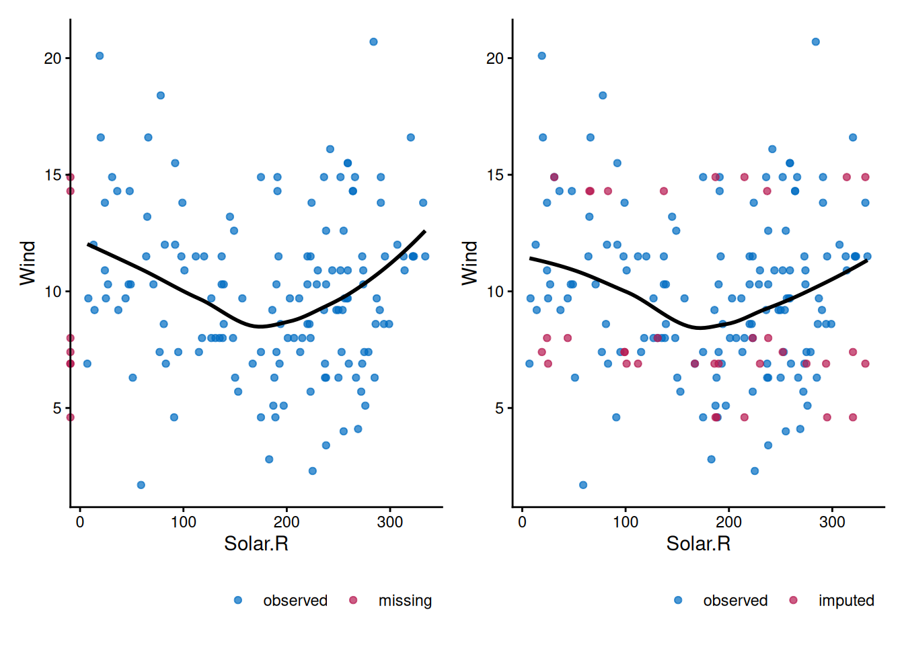

4 Missingness
4.1 Introduction
When fitting models to a particular data set, missingness is of particular concern. Missing data can lead to biased coefficient estimates. Therefore, a good understanding of the different missingness patterns, their implications on model fitting, and how to deal with them is essential. There are three missingness patterns (missingness mechanisms):
- missingness completely at random (MCAR)
- missingness at random (MAR)
- missingness not at random (MNAR).
In the following sections, we will use a simulated data set containing data on patients and their weight and BMI to illustrate these different mechanisms.
4.2 Missingess Patterns
4.2.1 Simulation Setup
Our simulation setup involves simulating the weight of patients visiting their general physician (GP) for a checkup. For each patient, the sex (male, female) is always recorded. The data set is balanced in terms of sex, and we assume a normally distributed weight (kg) with a mean weight \(\mu_{f} = 65\) for women and \(\mu_{m} = 78\) for men. The standard deviation \(\sigma = 10\) is the same for both sexes:
\[ W_{f} \sim \mathcal{N}(65, 100) \]
and
\[ W_{m} \sim \mathcal{N}(78, 100). \]
We also simulate the BMI for these patients. We assume the BMI is normally distributed as follows:
\[ BMI \sim \mathcal{N}(25, 9). \]
# Simulate patient data. The data set contains 10000 observations, and is
# balanced in terms of sex.
set.seed(123)
n <- 10000
# Define the parameters that define the distribution of weight and BMI
sd_bmi <- 3
mu_bmi <- 25
sd_weight <- 10
mu_weight_f <- 65
mu_weight_m <- 78
weights <- tibble::tibble(
idx = 1:n,
sex = rep(x = c("F", "M"), each = n / 2),
weight = c(
rnorm(n / 2, mu_weight_f, sd_weight),
rnorm(n / 2, mu_weight_m, sd_weight)
),
bmi = round(rnorm(n, mu_bmi, sd_bmi), 1)
)We can see that the conditional distributions of weight given sex have different means.

But the conditional distributions of BMI are the same.

4.2.2 Missingness Completely at Random
Missingness completely at random indicates that the observations with missing values are a random subset of all observations. There are no factors that affect the probability of missingness, nor is the probability of missingness affected by the outcome itself (weight or BMI); the probability of missingness does not depend on observed nor unobserved variables. The distribution of observed and missing values is the same.
# Simulate MCAR: assume that 30% of observations have a missing outcome
set.seed(123)
idxs <- sample(x = n, size = n * 0.3)
weights["mcar"] <- weights$idx %in% idxsBecause the observations with missing values are a random subset of all observations, we should see no difference between the distributions of missing and observed values.

4.2.3 Missingness at Random
With missingness at random, we believe there are certain factors that affect the probability of missingness, and that these same factors also have an effect on the outcome. In our example, we see that sex affects the weight. We now assume that sex also affects the probability of missingness.
# Determine the conditional probabilities of missingness
p_missing_f <- 0.45
p_missing_m <- 0.25
idxs <- c(
sample(
x = weights[weights$sex == "F", "idx", drop = T],
size = (n / 2) * p_missing_f
),
sample(
x = weights[weights$sex == "M", "idx", drop = T],
size = (n / 2) * p_missing_m
)
)
weights["mar"] <- weights$idx %in% idxsInspection of the distributions of observed and missing values shows us that the distribution of missing values is shifted to the left compared to the distribution of observed values.

Because the probability of missingness is higher for women then for men, the fraction of patients with a missing weight that are female is higher than the fraction of patients with a missing weight that are men. This affects the distribution of the missing weights, i.e., shifting the distribution to the left. Assume that sex is the only factor that affects the probability of missingness, then, conditional on sex, the distribution of observed values and missing values is the same.

We can see that, conditional on sex, the distribution of observed and missing weights is the same. This illustrates the concept of missingness at random. Sex is the factor that influences both the probability of missingness and the outcome itself. Conditioning on this factors removes the difference in distributions of observed and missing weights.
In practice, it is impossible to conclude missingness at random by comparing the distribution of observed and missing values as the missing values are, of course, missing. This example just demonstrates the concept of missingness at random.
4.2.4 Missingness Not at Random
With missingness not at random, the probability of missingness is not affected by a factor that is recorded, but is affected by factors that are not recorded or even by the outcome itself. For this missingness pattern, we will not focus on the weight of the patient but on the patient’s BMI. The distribution of BMI is the same for women and for men:

However, we could argue the following: if a patient visits the GP, then the GP will more likely weigh the patient if he/she seems overweight or obese. We could make the same argument for underweight patients, but for the sake of illustration, we will assume the likelihood of being weighted is higher for overweight and obese patients. Based on BMI, we can classify patients as:
- underweight: \(BMI < 18.5\)
- normal: \(18.5 \leq BMI \leq 24.9\)
- overweight: \(25 \leq BMI \leq 29.9\)
- obese: \(30 \leq BMI\).
We assume the following conditional probabilities of missingness:
# Define conditional probabilities of missingness
p_missing_uw_nw <- 0.75 # underweight and normal weight
p_missing_ow_ob <- 0.55 # overweight and obese# Classify patients based on their BMI
weights <- weights %>%
dplyr::mutate(
bmi_class = dplyr::case_when(
bmi < 18.5 ~ "uw",
dplyr::between(bmi, 18.5, 24.9) ~ "nw",
dplyr::between(bmi, 25.0, 29.9) ~ "ow",
bmi >= 30.0 ~ "ob"
)
)fd_bmi_classes_df <- weights %>%
dplyr::group_by(bmi_class) %>%
dplyr::summarize(n = n())
fd_bmi_classes <- fd_bmi_classes_df$n
names(fd_bmi_classes) <- fd_bmi_classes_df$bmi_classset.seed(456)
idxs <- c(
sample(
x = weights[weights$bmi_class %in% c("uw", "nw"), "idx", drop = T],
size = round((fd_bmi_classes["uw"] + fd_bmi_classes["nw"]) * p_missing_uw_nw)
),
sample(
x = weights[weights$bmi_class %in% c("ow", "ob"), "idx", drop = T],
size = round((fd_bmi_classes["ow"] + fd_bmi_classes["ob"]) * p_missing_ow_ob)
)
)
weights["mnar"] <- weights$idx %in% idxsFirst, let’s have a look at the distribution of BMI conditional on missingness.

The distribution of the missing BMI values is shifted to the left compared to the distribution of the observed BMI values. This makes sense as the probability of the weight being recorded, and thus the BMI being calculated, is bigger as a patient tends to be overweight or obese.
We know from our simulation that sex does not influence the probability of missigness, nor is there any other factor that influences the probability of missingness, only the outcome itself. Therefore, conditioning on sex, will not eliminate the difference in distribution between observed and missing values.

4.3 Handling Missing Data
There are different approaches to handle missing data. They are not always suitable for every situation and have different drawbacks. In this section, we will go over the different approaches and discuss when to use them and their disadvantages. When going over these different approaches to handle missingness, it is important to consider bias and precision. We will come back to this.
4.3.1 Example Case
To demonstrate the different approaches, we use the data set on the weights. The data set contains the weight for all students enrolled in a particular school. The population mean for the weight can be calculated and is:
\[ \mathbb{E} [W] = 71.476 \]
If we want to estimate the population mean for weight, we can draw a random sample of 100 students and use the unbiased estimator, i.e., the sample average, to calculate an estimate for the mean weight. If we do this repeatedly, then the mean of the unbiased estimator approaches the population mean.
# Ensure reproducibility
set.seed(123)
# Repeat the sampling 1000 times to obtain 1000 samples
N <- 1000
mean_weights <- rep(x = NA, times = N)
for (i in 1:N) {
# Draw a random sample of 100 students and calculate the sample mean
idxs <- sample(x = n, size = 100, replace = FALSE)
mean_weights[i] <- mean(weights$weight[idxs])
}
mean_estimator <- mean(mean_weights)
se_estimator <- sd(mean_weights)The mean of the sample means equals 71.514, which is very close to the population mean of 71.476. The following figure illustrates that the expectation of the estimator is close to the population parameter value. Furthermore, the precision of the estimator can be gauged from this figure.

To calculate the precision, we will calculate the standard error empirically as the standard deviation of the sample means, which then equals 1.163.
# Read the lifestyle data
lifestyle <- readr::read_csv(
file = fs::path(fs::path_wd(), "data", "lifestyle.csv"),
show_col_types = FALSE,
)
# Select the variables
lifestyle <- lifestyle %>%
dplyr::select(
age = Age,
sex = Gender,
weight = `Weight (kg)`,
height = `Height (m)`,
)
# Randomly select 1000 observations
set.seed(789)
idxs <- sample(x = nrow(lifestyle), size = 1000, replace = FALSE)
lifestyle <- lifestyle[idxs,, drop = FALSE]
lifestyle_original <- lifestyle
# Replace observed values with missing values
set.seed(456)
idxs <- sample(x = nrow(lifestyle), size = 100, replace = FALSE)
lifestyle$weight[idxs] <- NA
idxs <- sample(x = nrow(lifestyle), size = 150, replace = FALSE)
lifestyle$height[idxs] <- NA
# Cast the sex to a factor
lifestyle$sex <- as.factor(lifestyle$sex)4.3.2 Complete Case Analysis
Complete case analysis only uses those observations without missing values. If there is MCAR, then estimates are unbiased but the precision will not be as good because less data is being used. We can illustrate this.
# Ensure reproducibility
set.seed(123)
# Repeat the sampling 1000 times to obtain 1000 samples
N <- 1000
mean_weights <- rep(x = NA, times = N)
for (i in 1:N) {
# Draw a random sample of 100 students
idxs <- sample(x = n, size = 100, replace = FALSE)
student_sample <- weights[idxs,]
# Simulate MCAR: the observations in the sample with missing data are a random
# subset of the sample
idxs <- sample(x = student_sample$idx, size = 30)
student_sample$missing <- student_sample$idx %in% idxs
# Calculate the sample mean
mean_weights[i] <- mean(student_sample[student_sample$missing == FALSE,]$weight)
}
mean_estimator <- mean(mean_weights)
se_estimator <- sd(mean_weights)We see that the expectation of the estimator \(\mathbb{E} [W] = 71.515\) is still very close to the population mean 71.476, but the precision is not as good, equaling 1.432.
With MAR, estimates are no longer unbiased. Because the probability of missingness depends on one or more observed variables. Again, we can illustrate this.
# Ensure reproducibility
set.seed(123)
# Repeat the sampling 1000 times to obtain 1000 samples
N <- 1000
mean_weights <- rep(x = NA, times = N)
# Determine the conditional probabilities of missingness
p_missing_f <- 0.45
p_missing_m <- 0.25
for (i in 1:N) {
# Draw a random sample of 100 students
idxs <- sample(x = n, size = 100, replace = FALSE)
student_sample <- weights[idxs,]
# Simulate MCAR: the observations in the sample with missing data are a random
# subset of the sample
idxs <- c(
sample(
x = student_sample[student_sample$sex == "F", "idx", drop = T],
size = round(nrow(student_sample[student_sample$sex == "F",]) * p_missing_f)
),
sample(
x = student_sample[student_sample$sex == "M", "idx", drop = T],
size = round(nrow(student_sample[student_sample$sex == "M",]) * p_missing_m)
)
)
student_sample$missing <- student_sample$idx %in% idxs
# Calculate the sample mean
mean_weights[i] <- mean(student_sample[student_sample$missing == FALSE,]$weight)
}
mean_estimator <- mean(mean_weights)
se_estimator <- sd(mean_weights)We now see that the expectation of the estimator \(\mathbb{E} [W] = 72.527\) is not as close to the population mean as seen previously. Furthermore, the empirical standard error of 1.337 is again larger. The population comprises male and female students. The weight of the male students follows the following distribution:
\[ W_{m} \sim \mathcal{N}(78, 100) \]
and the one of the female students follows the following:
\[ W_{f} \sim \mathcal{N}(65, 100). \]
The conditional probability of missingness is higher for female students than for male students:
\[ \mathbb{P} [M = 1 | Sex = F] = 0.45 \]
versus:
\[ \mathbb{P} [M = 1 | Sex = M] = 0.25 \]
with \(M\) an indicator variable for missingness, \(M = 1\) if missing and \(M = 0\) otherwise.
Because the probability of missingness is higher for female students, the observed values for weights are more representative of male students, and therefore these lift the sample mean up.

Overall, complete-case analysis results in a reduction in precision due to not all observations being used. Furthermore, when applying complete-case analysis when MAR is applicable, the estimates are biased.
4.3.3 Mean Value Imputation
Mean value imputation is a technique in which missing values are imputed with the mean of the observed values. Because the same value is imputed for every missing value, the true variability is artificially reduced. This leads to a reduction in standard errors and this an artificially high precision. With MAR, mean value imputation can also lead to biased estimates. We illustrate:
# Ensure reproducibility
set.seed(123)
# Repeat the sampling 1000 times to obtain 1000 samples
N <- 1000
mean_weights <- rep(x = NA, times = N)
for (i in 1:N) {
# Draw a random sample of 100 students
idxs <- sample(x = n, size = 100, replace = FALSE)
student_sample <- weights[idxs,]
# Simulate MCAR: the observations in the sample with missing data are a random
# subset of the sample
idxs <- sample(x = student_sample$idx, size = 30)
student_sample$missing <- student_sample$idx %in% idxs
# Calculate the sample mean
mean_weights[i] <- mean(student_sample[student_sample$missing == FALSE,]$weight)
}
mean_estimator <- mean(mean_weights)
se_estimator <- sd(mean_weights)We now demonstrate mean value imputation with the lifestyle dataset. First, let us investigate the missing data. There are 762 observations without any missing values, 138 observations with a missing value for height, 88 observations with a missing value for weight, and 12 observations with missing values for height and weight.

We can use the mice package to apply mean value imputation. Note that we only need one imputed dataset, because, in this case, every imputed dataset will be the same. The imputed value for weight equals 74.0762444 and for height equals 1.7131059.
4.4 MICE
4.4.1 Continuous Variables
We have two continuous variables for which we have missing data: weight and height.
4.4.1.1 Regression-Based Imputation
4.4.1.2 Predictive Mean Matching
# Impute missing values with predictive mean matching
imputed_lifestyle <- mice::mice(
data = lifestyle,
m = 1,
method = c(age = "", sex = "", weight = "pmm", height = "pmm"),
printFlag = FALSE,
)We can also use an imputation model. We will choose what variables are used for each variable to impute.
# Create a predication matrix
pred_matrix <- matrix(
data = c(
0, 0, 0, 0,
0, 0, 0, 0,
0, 1, 0, 1,
0, 1, 1, 0
),
nrow = length(lifestyle),
byrow = TRUE,
)
colnames(pred_matrix) <- colnames(lifestyle)
rownames(pred_matrix) <- colnames(lifestyle)
pred_matrix## age sex weight height
## age 0 0 0 0
## sex 0 0 0 0
## weight 0 1 0 1
## height 0 1 1 04.5 Investigate Missing Data
When missing data occurs, it must be investigated. A first step is to quantify the missing data:
- How many missing values are there (absolute and relative)?
- How many variables have missing values?
- How many observations have at least one missing value?
To get a better feeling on how many missing data there is, we can first check how many values (observed and missing) there are. There are 153 observations and 6 variables, giving a total of 918 values (data points).
## [1] 153 6## [1] 918A call to summary() helps us understand how many variables have missing values.
## Ozone Solar.R Wind Temp Month Day
## Min. : 1.00 Min. : 7.0 Min. : 1.700 Min. :56.00 Min. :5.000 Min. : 1.0
## 1st Qu.: 18.00 1st Qu.:115.8 1st Qu.: 7.400 1st Qu.:72.00 1st Qu.:6.000 1st Qu.: 8.0
## Median : 31.50 Median :205.0 Median : 9.700 Median :79.00 Median :7.000 Median :16.0
## Mean : 42.13 Mean :185.9 Mean : 9.958 Mean :77.88 Mean :6.993 Mean :15.8
## 3rd Qu.: 63.25 3rd Qu.:258.8 3rd Qu.:11.500 3rd Qu.:85.00 3rd Qu.:8.000 3rd Qu.:23.0
## Max. :168.00 Max. :334.0 Max. :20.700 Max. :97.00 Max. :9.000 Max. :31.0
## NA's :37 NA's :7## [1] 44# Calculate the relative quantity of missing values
round(sum(is.na(airquality)) * 100 / (nrow(airquality) * ncol(airquality)), 2)## [1] 4.79# Calculate the quantity of missing values per variable
sapply(airquality, function(x) sum(is.na(x)))## Ozone Solar.R Wind Temp Month Day
## 37 7 0 0 0 0# Calculate the relative quantity of missing values per variable
sapply(airquality, function(x) sum(is.na(x)) * 100 / length(x))## Ozone Solar.R Wind Temp Month Day
## 24.183007 4.575163 0.000000 0.000000 0.000000 0.000000To better understand the missing data, the mice package provides the md.pattern() function. The following plot shows us that 111 observations have no missing values. 40 observations have one missing value, of which 35 have a missing value for Ozone and 5 observations have a missing value for Solar.R. Finally, two observations each have two missing values in the variables Solar.R and Ozone.

Another helpful package to help understand the missing data is VIM, which enables to create the following figure.
md_plot <- VIM::aggr(
x = airquality,
col = c('navyblue','red'),
numbers = TRUE,
sortVars = TRUE,
labels = names(data),
cex.axis = .7,
gap = 3,
ylab = c("Histogram of missing data", "Pattern of missing data")
)
##
## Variables sorted by number of missings:
## Variable Count
## Ozone 0.24183007
## Solar.R 0.04575163
## Wind 0.00000000
## Temp 0.00000000
## Month 0.00000000
## Day 0.00000000We can now use the mice package to impute the missing values with an imputation method of our choice.
# Impute the missing values using predictive mean matching
imputed_data_pmm <- mice::mice(
data = airquality,
m = 5, # the number of imputed datasets
method = "pmm", # the imputation method (predictive mean matching)
maxit = 50,
seed = 500,
printFlag = FALSE,
)## Class: mids
## Number of multiple imputations: 5
## Imputation methods:
## Ozone Solar.R Wind Temp Month Day
## "pmm" "pmm" "" "" "" ""
## PredictorMatrix:
## Ozone Solar.R Wind Temp Month Day
## Ozone 0 1 1 1 1 1
## Solar.R 1 0 1 1 1 1
## Wind 1 1 0 1 1 1
## Temp 1 1 1 0 1 1
## Month 1 1 1 1 0 1
## Day 1 1 1 1 1 0## 1 2 3 4 5
## 5 14 8 6 19 8
## 10 11 20 20 18 44
## 25 8 18 19 19 18
## 26 13 13 37 37 13
## 27 37 13 12 11 21
## 32 59 40 44 47 45
## 33 30 59 13 45 36
## 34 37 32 37 32 1
## 35 63 20 89 35 40
## 36 59 89 39 78 89
## 37 36 16 30 16 41
## 39 61 79 97 50 82
## 42 50 115 77 61 78
## 43 79 50 76 91 79
## 45 45 46 45 28 45
## 46 52 47 35 63 46
## 52 35 59 96 59 35
## 53 48 39 78 39 96
## 54 40 49 110 89 49
## 55 59 64 110 78 39
## 56 28 45 59 44 52
## 57 47 16 48 16 47
## 58 23 21 39 41 30
## 59 52 44 35 16 28
## 60 21 23 23 9 21
## 61 96 48 79 39 110
## 65 36 16 29 23 23
## 72 46 28 35 32 32
## 75 48 40 37 35 48
## 83 49 49 48 71 78
## 84 35 59 59 49 71
## 102 61 85 82 61 82
## 103 28 31 20 45 35
## 107 41 14 16 21 23
## 115 36 13 20 16 23
## 119 66 61 97 79 122
## 150 41 21 36 21 11# Get one of the five complete (imputed) datasets
imp_1 <- mice::complete(imputed_data_pmm, 1)
dim(imp_1)## [1] 153 6A density plot allows us to compare the distributions of the imputed values (magenta) for each imputed dataset with the distribution of the observed values (blue).
# We can compare the distributions of the imputed values with the distribution
# of the observed values
mice::densityplot(x = imputed_data_pmm)

## Warning in .S3methods(generic.function, class, envir, all.names = all.names, : function 'mice' appears not to be S3 generic; found
## functions that look like S3 methods## [1] mice.impute.2l.bin mice.impute.2l.lmer mice.impute.2l.norm mice.impute.2l.pan
## [5] mice.impute.2lonly.mean mice.impute.2lonly.norm mice.impute.2lonly.pmm mice.impute.cart
## [9] mice.impute.jomoImpute mice.impute.lasso.logreg mice.impute.lasso.norm mice.impute.lasso.select.logreg
## [13] mice.impute.lasso.select.norm mice.impute.lda mice.impute.logreg mice.impute.logreg.boot
## [17] mice.impute.mean mice.impute.midastouch mice.impute.mnar.logreg mice.impute.mnar.norm
## [21] mice.impute.mpmm mice.impute.norm mice.impute.norm.boot mice.impute.norm.nob
## [25] mice.impute.norm.predict mice.impute.panImpute mice.impute.passive mice.impute.pmm
## [29] mice.impute.polr mice.impute.polyreg mice.impute.quadratic mice.impute.rf
## [33] mice.impute.ri mice.impute.sample mice.mids mice.theme
## see '?methods' for accessing help and source codeSuppose we want to use different imputation methods for the different variables that have missing values.
# Impute the missing values using predictive mean matching
imputed_data_pmm <- mice::mice(
data = airquality,
m = 5,
method = c("pmm", "mean", "", "", "", ""),
maxit = 50,
seed = 500,
printFlag = FALSE,
)## Class: mids
## Number of multiple imputations: 5
## Imputation methods:
## Ozone Solar.R Wind Temp Month Day
## "pmm" "mean" "" "" "" ""
## PredictorMatrix:
## Ozone Solar.R Wind Temp Month Day
## Ozone 0 1 1 1 1 1
## Solar.R 1 0 1 1 1 1
## Wind 1 1 0 1 1 1
## Temp 1 1 1 0 1 1
## Month 1 1 1 1 0 1
## Day 1 1 1 1 1 0